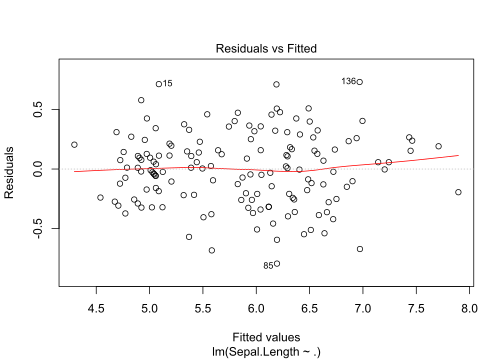
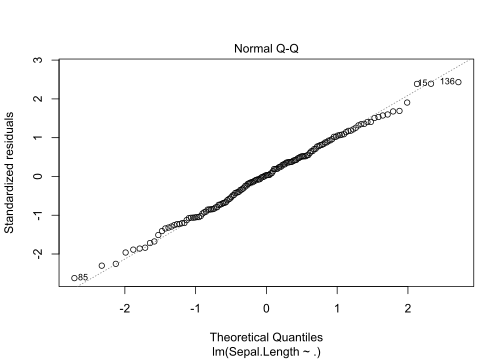
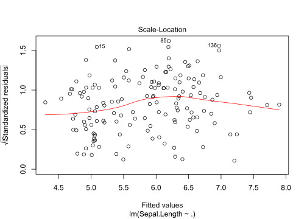

Chapter 3 R programming
This chapter is about base R stuff that I find important and that is often overlooked or unknown to most R users.
Learn more with the Advanced R book.
3.1 Common mistakes
If you are using R and you think you’re in hell, this is a map for you.
– Patrick Burns
3.1.1 Equality
#> [1] FALSE#> [1] 0.10000000000000001 0.20000000000000001 0.29999999999999999#> [1] TRUE#> [1] "Mean relative difference: 0.3333333"#> [1] FALSE3.1.2 Arguments
#> [1] -1#> [1] 118#> [1] -1#> [1] -1#> function (..., na.rm = FALSE)
#> NULL#> function (x, ...)
#> NULL#> function (x, na.rm = FALSE, ...)
#> NULLAlways use a vector if you’re not sure:
#> [1] -1#> [1] 118#> [1] 40.66667#> [1] 53.1.3 Others
#> [1] 5 8 1 3 9 6 7 10 2 4#> [1] 7 9 4 3 2 1 6 5 10 8#> [1] 8 9 5 1 2 7 10 3 6 4#> [1] 0 1 2 3 4 5 6 7 8 9#> [1] 1 2 3 4 5 6 7 8 9#> [1] 1 2 3 4 5 6 7 8 9#> [1] 1 0#> integer(0)3.2 R base objects
3.2.1 Types
There are many “atomic” types of data: logical, integer, double and character (in this order, see below). There are also raw and complex but they are rarely used.
You can’t mix types in an atomic vector (you can in a list). Coercion will automatically occur if you mix types:
#> [1] FALSE#> [1] "logical"#> [1] 1 2 3 4 5 6 7 8 9 10#> [1] "integer"#> [1] 0 1 2 3 4 5 6 7 8 9 10#> [1] 10.5#> [1] "double"#> [1] 1.0 2.0 3.0 4.0 5.0 6.0 7.0 8.0 9.0 10.0 10.5#> [1] "1" "2" "3" "4" "5" "6" "7" "8" "9" "10" "10.5" "a"#> [[1]]
#> [1] 1
#>
#> [[2]]
#> [1] "a"#> [1] TRUE3.2.2 Exercise
Use the automatic type coercion to convert this boolean matrix to a numeric one (with 0s and 1s). [What do you need to change to get an integer matrix instead?]
#> [,1] [,2] [,3] [,4]
#> [1,] FALSE TRUE TRUE TRUE
#> [2,] TRUE FALSE FALSE FALSE
#> [3,] FALSE TRUE TRUE TRUE3.3 Base objects and accessors
3.3.1 Objects
“atomic” vector: vector of one base type (see above).
scalar: this doesn’t exist, this is a vector of length 1.
matrices / arrays: a vector with some dimensions (attribute).
#> [1] 1 2 3 4 5 6 7 8 9 10 11 12#> [,1] [,2] [,3] [,4]
#> [1,] 1 4 7 10
#> [2,] 2 5 8 11
#> [3,] 3 6 9 12#> [1] "matrix"#> , , 1
#>
#> [,1] [,2]
#> [1,] 1 4
#> [2,] 2 5
#> [3,] 3 6
#>
#> , , 2
#>
#> [,1] [,2]
#> [1,] 7 10
#> [2,] 8 11
#> [3,] 9 12#> [1] "array"list: vector of elements with possibly different types in it.
data.frame: a list whose elements have the same lengths, and formatted somewhat as a matrix.
#> Sepal.Length Sepal.Width Petal.Length Petal.Width Species
#> 1 5.1 3.5 1.4 0.2 setosa
#> 2 4.9 3.0 1.4 0.2 setosa
#> 3 4.7 3.2 1.3 0.2 setosa
#> 4 4.6 3.1 1.5 0.2 setosa
#> 5 5.0 3.6 1.4 0.2 setosa
#> 6 5.4 3.9 1.7 0.4 setosa#> [1] 150 5#> [1] 53.3.2 Accessors
- The
[accessor is used to access a subset of the data with the same class.
#> [1] 0.5678152 0.3297488 0.6957220 0.2612280 0.5057869#> [1] 0.3297488 0.6957220#> [1] 0.3297488 0.6957220 0.2612280 0.5057869 NA NA NA#> [,1] [,2] [,3] [,4]
#> [1,] 0.4589310 0.2569737 0.8492932 0.8266435
#> [2,] 0.5145832 0.4594012 0.7839987 0.8383510
#> [3,] 0.1398190 0.1738037 0.4731685 0.8837999#> [1] 0.2569737 0.4594012 0.1738037 0.8492932 0.7839987 0.4731685#> $a
#> [1] 2 3
#>
#> $b
#> [1] "toto"
#>
#> $c
#> [1] 0.08520838 0.86733434 0.47936502 0.54252901 0.07209027 0.49844341 0.43783312
#> [8] 0.15120798 0.38576118 0.81087913#> $b
#> [1] "toto"
#>
#> $c
#> [1] 0.08520838 0.86733434 0.47936502 0.54252901 0.07209027 0.49844341 0.43783312
#> [8] 0.15120798 0.38576118 0.81087913#> Sepal.Length Sepal.Width Petal.Length Petal.Width Species
#> 1 5.1 3.5 1.4 0.2 setosa
#> 2 4.9 3.0 1.4 0.2 setosa
#> 3 4.7 3.2 1.3 0.2 setosa
#> 4 4.6 3.1 1.5 0.2 setosa
#> 5 5.0 3.6 1.4 0.2 setosa
#> 6 5.4 3.9 1.7 0.4 setosa#> Petal.Length Petal.Width
#> 1 1.4 0.2
#> 2 1.4 0.2
#> 3 1.3 0.2
#> 4 1.5 0.2
#> 5 1.4 0.2
#> 6 1.7 0.4#> [1] "data.frame"You can also use a logical and character vectors to index these objects.
#> [1] 0.4038403 0.8400587 0.2822288 0.6097243#> [1] 0.8400587 0.6097243#> [1] 0.8400587 0.6097243#> Petal.Length Species
#> 1 1.4 setosa
#> 2 1.4 setosa
#> 3 1.3 setosa
#> 4 1.5 setosa
#> 5 1.4 setosa
#> 6 1.7 setosa- The
[[accessor is used to access a single element.
#> [1] 1 2 3 4 5 6 7 8 9 10#> [1] 3#> [1] "toto"#> [1] setosa setosa setosa setosa setosa setosa setosa
#> [8] setosa setosa setosa setosa setosa setosa setosa
#> [15] setosa setosa setosa setosa setosa setosa setosa
#> [22] setosa setosa setosa setosa setosa setosa setosa
#> [29] setosa setosa setosa setosa setosa setosa setosa
#> [36] setosa setosa setosa setosa setosa setosa setosa
#> [43] setosa setosa setosa setosa setosa setosa setosa
#> [50] setosa versicolor versicolor versicolor versicolor versicolor versicolor
#> [57] versicolor versicolor versicolor versicolor versicolor versicolor versicolor
#> [64] versicolor versicolor versicolor versicolor versicolor versicolor versicolor
#> [71] versicolor versicolor versicolor versicolor versicolor versicolor versicolor
#> [78] versicolor versicolor versicolor versicolor versicolor versicolor versicolor
#> [85] versicolor versicolor versicolor versicolor versicolor versicolor versicolor
#> [92] versicolor versicolor versicolor versicolor versicolor versicolor versicolor
#> [99] versicolor versicolor virginica virginica virginica virginica virginica
#> [106] virginica virginica virginica virginica virginica virginica virginica
#> [113] virginica virginica virginica virginica virginica virginica virginica
#> [120] virginica virginica virginica virginica virginica virginica virginica
#> [127] virginica virginica virginica virginica virginica virginica virginica
#> [134] virginica virginica virginica virginica virginica virginica virginica
#> [141] virginica virginica virginica virginica virginica virginica virginica
#> [148] virginica virginica virginica
#> Levels: setosa versicolor virginica![Indexing lists in R. [Source: https://goo.gl/8UkcHq]](https://pbs.twimg.com/media/DQ5en8XWAAICIaJ.jpg)
Figure 3.1: Indexing lists in R. [Source: https://goo.gl/8UkcHq]
- Beware partial matching
#> [1] 1 2 3 4 5#> NULL#> [1] 1 2 3 4 5- Special use of the
[accessor for array-like data.
#> [,1] [,2] [,3] [,4]
#> [1,] 1 4 7 10
#> [2,] 2 5 8 11
#> [3,] 3 6 9 12#> [1] 1 4 7 10#> [,1] [,2]
#> [1,] 1 4
#> [2,] 2 5
#> [3,] 3 6#> [1] 1 4#> [,1] [,2]
#> [1,] 1 4#> [,1] [,2]
#> [1,] 1 1
#> [2,] 1 2#> [1] 1 4#> [,1] [,2] [,3] [,4]
#> [1,] 1 4 7 10
#> [2,] 2 5 8 11
#> [3,] 3 6 9 12#> [,1] [,2] [,3] [,4]
#> [1,] 1 4 7 10
#> [2,] 2 5 8 11
#> [3,] 3 6 9 12#> [,1] [,2] [,3] [,4]
#> [1,] 2 2 2 2
#> [2,] 2 2 2 2
#> [3,] 2 2 2 2If you use arrays with more than two dimensions, just add a comma for every new dimension.
3.3.3 Exercises
Use the dimension attribute to make a function that computes the sums every n elements of a vector. In which order are matrix elements stored? [Which are the special cases that you should consider?]
#> [1] 3 7 11 15 19Compute the means of every numeric columns of the
irisdataset. Expected result:#> Sepal.Length Sepal.Width Petal.Length Petal.Width #> 5.843333 3.057333 3.758000 1.199333Convert this matrix to a vector by replacing
c(0,0) -> 0; c(0,1) -> 1; c(1,1) -> 2; c(1,0) -> NA#> [,1] [,2] #> [1,] 0 0 #> [2,] 0 1 #> [3,] 0 0 #> [4,] 0 0 #> [5,] 1 1 #> [6,] 0 1 #> [7,] 0 1 #> [8,] 1 0 #> [9,] 1 1 #> [10,] 0 0by using this matrix:
#> [,1] [,2] #> [1,] 0 1 #> [2,] NA 2Begin by using
apply()and then replace it by a special accessor; what is the advantage?Expected result:
#> [1] 0 1 0 0 2 1 1 NA 2 0
3.4 Useful R base functions
In this section, I present some useful R base functions (also see this comprehensive list in French and this one in English):
3.4.1 General
#> 'data.frame': 150 obs. of 5 variables:
#> $ Sepal.Length: num 5.1 4.9 4.7 4.6 5 5.4 4.6 5 4.4 4.9 ...
#> $ Sepal.Width : num 3.5 3 3.2 3.1 3.6 3.9 3.4 3.4 2.9 3.1 ...
#> $ Petal.Length: num 1.4 1.4 1.3 1.5 1.4 1.7 1.4 1.5 1.4 1.5 ...
#> $ Petal.Width : num 0.2 0.2 0.2 0.2 0.2 0.4 0.3 0.2 0.2 0.1 ...
#> $ Species : Factor w/ 3 levels "setosa","versicolor",..: 1 1 1 1 1 1 1 1 1 1 ...#> [1] "a" "b" "c" "d"
#> [5] "decode" "l" "mat" "n"
#> [9] "osef" "two_col_ind" "vec" "WORDS_TO_IGNORE"
#> [13] "x" "y"#> [1] summary.aov summary.aovlist*
#> [3] summary.aspell* summary.check_packages_in_dir*
#> [5] summary.connection summary.data.frame
#> [7] summary.Date summary.default
#> [9] summary.ecdf* summary.factor
#> [11] summary.glm summary.infl*
#> [13] summary.lm summary.loess*
#> [15] summary.manova summary.matrix
#> [17] summary.mlm* summary.nls*
#> [19] summary.packageStatus* summary.POSIXct
#> [21] summary.POSIXlt summary.ppr*
#> [23] summary.prcomp* summary.princomp*
#> [25] summary.proc_time summary.rlang_error*
#> [27] summary.rlang_trace* summary.srcfile
#> [29] summary.srcref summary.stepfun
#> [31] summary.stl* summary.table
#> [33] summary.tukeysmooth* summary.warnings
#> see '?methods' for accessing help and source code#> [1] add1 alias anova case.names coerce
#> [6] confint cooks.distance deviance dfbeta dfbetas
#> [11] drop1 dummy.coef effects extractAIC family
#> [16] formula hatvalues influence initialize kappa
#> [21] labels logLik model.frame model.matrix nobs
#> [26] plot predict print proj qr
#> [31] residuals rstandard rstudent show simulate
#> [36] slotsFromS3 summary variable.names vcov
#> see '?methods' for accessing help and source code#> [[1]]
#> [1] 1
#>
#> [[2]]
#> [1] 2
#>
#> [[3]]
#> [1] 3
#>
#> [[4]]
#> [1] 4
#>
#> [[5]]
#> [1] 5#> [1] 1 2 3 4 53.4.2 Sequence and vector operations
#> [1] 1 2 3 4 5 6 7 8 9 10#> [1] 1 3 5 7 9#> [1] 1 12 23 34 45 56 67 78 89 100#> [1] 1 2 3 4 5#> [1] 1 2 3 4#> [1] 1 2 3 4 1 2 3 4#> [1] 1 1 2 2 3 3 4 4#> [1] 1 1 1 1 2 2 2 3 3 4#> [1] 1 2 3 1 2 3 1 2#> [,1] [,2] [,3] [,4] [,5]
#> [1,] -0.3298141 0.9729840096 -0.98611804 -0.364792718 -1.8045609
#> [2,] 0.2596892 0.0796755651 -1.12672066 -1.341847844 1.1372299
#> [3,] 0.9170146 -0.0003000904 0.06581661 -0.556032452 0.8357378
#> [4,] 0.1881632 -0.4520832687 0.23447580 -1.459873503 0.5015053
#> [5,] -1.1977269 -2.1742213080 0.73791523 0.493595663 -1.9680412
#> [6,] -0.7365490 0.2679143302 -1.77522371 -0.359836551 0.4360980
#> [7,] 0.3239717 -1.2541577385 0.57502714 0.003012661 1.3222263
#> [8,] -0.9360819 -1.2721448237 -0.53535310 0.409223384 0.5322875
#> [9,] -0.6057049 -0.5147652924 0.24531183 0.320685866 0.5674676
#> [10,] -1.6282814 -0.1632821998 -0.95603690 1.230778781 0.8696539#> [1] 1 2 2 6 8#> [1] 1 5 4 2 3#> [1] 1.0 4.0 5.0 2.5 2.5#> [1] 1 4 5 2 3#> [1] "a1" "a10" "a2"#> [1] "a1" "a2" "a10"#> [1] 4#> [1] 6#> [1] 1 NA 2 3#>
#> 1 2 3 4
#> 4 3 2 1#> B
#> A 1 2
#> 1 2 1
#> 2 1 1#> [1] 3 9 10 2 5 1 7 8 6 4#> [1] 9 10 7 4 6#> [1] 6 8 5 9 4 6 6 9 5 6 9 5 4 6 3 10 10 10 10 7 7 3 4 8 4 3 5 7
#> [29] 9 10 8 7 10 4 10 5 9 4 10 3 10 3 5 9 8 6 7 3 10 6#> [1] 41 47 5 50 48 48 63 48 78 71#> [1] 41.48 46.82 4.94 49.83 48.38 47.84 63.00 48.23 77.61 70.76#> [1] 40 50 0 50 50 50 60 50 80 70#> [1] 1 2 2 1#> [1] 4 3 3 4#> [,1] [,2] [,3]
#> [1,] 2 3 4
#> [2,] 3 4 5
#> [3,] 4 5 6
#> [4,] 5 6 7#> param1 param2
#> 1 5 1
#> 2 50 1
#> 3 5 3
#> 4 50 3
#> 5 5 10
#> 6 50 10Also see this nice Q/A on grouping functions and the *apply family and this book chapter about looping.
3.4.3 Character operations
#> [1] "I am me"#> [1] "test0"#> [1] "PC1" "PC2" "PC3" "PC4" "PC5" "PC6" "PC7" "PC8" "PC9" "PC10"#> I am Florian#> [1] "./good-practices.Rmd" "./index.Rmd" "./intro.Rmd"
#> [4] "./packages.Rmd" "./performance.Rmd" "./rprog.Rmd"
#> [7] "./shiny.Rmd" "./tidyverse.Rmd"#> [1] "./good-practices.pdf" "./index.pdf" "./intro.pdf"
#> [4] "./packages.pdf" "./performance.pdf" "./rprog.pdf"
#> [7] "./shiny.pdf" "./tidyverse.pdf"#> [1] "d" "b" "d" "d" "d" "a" "d" "a" "d" "b"#> [1] 4 2 4 4 4 1 4 1 4 2#> [1] FALSE TRUE FALSE FALSE FALSE TRUE FALSE TRUE FALSE TRUE#> Run Length Encoding
#> lengths: int [1:4] 4 3 2 1
#> values : int [1:4] 1 2 3 4#> $a
#> [1] 1 4 7 10
#>
#> $b
#> [1] 2 5 8 11
#>
#> $c
#> [1] 3 6 9 12#> [1] "c" "d"#> [1] "a" "b" "c" "d" "e"#> [1] "a" "b"3.4.4 Logical operators
#> <simpleError in doTryCatch(return(expr), name, parentenv, handler): will go there>#> [1] TRUE#> [1] FALSE FALSE TRUE TRUE#> [1] FALSE#> [1] 0.98861803 0.46711607 0.80513351 1.92001387 1.39447057 -1.10824582 -0.07011462
#> [8] 0.89500003 0.12553466 0.26518609#> [1] 0.98861803 0.46711607 0.80513351 1.92001387 1.39447057 1.10824582 0.07011462
#> [8] 0.89500003 0.12553466 0.26518609Beware with ifelse() (learn more there), for example
#> [1] 1#> [1] 1 2 3 4 5#> [1] 1 2 3 4 53.4.5 Exercises
Use
sample(),rep_len()andsplit()to make a function that randomly splits some indices in a list ofKgroups of indices (like for cross-validation). [Which are the special cases that you should consider?]#> $`1` #> [1] 2 12 16 18 19 21 24 27 32 34 35 37 39 40 #> #> $`2` #> [1] 1 3 5 7 9 10 13 15 23 25 28 29 30 #> #> $`3` #> [1] 4 6 8 11 14 17 20 22 26 31 33 36 38Use
replicate()andsample()to get a 95% confidence interval (using bootstrapping) for the mean of the following vector:#> [1] -0.6264538 0.1836433 -0.8356286 1.5952808 0.3295078 -0.8204684 0.4874291 #> [8] 0.7383247 0.5757814 -0.3053884#> [1] 0.1322028Expected output (approximately):
#> 2.5% 97.5% #> -0.3145143 0.5998608Use
match()and some accessor to add a column “my_val” to this datamy_mtcarsby putting the corresponding value of the column specified in “my_col”. [Can your solution be used for any number of column names?]my_mtcars <- mtcars[c("mpg", "hp")] my_mtcars$my_col <- sample(c("mpg", "hp"), size = nrow(my_mtcars), replace = TRUE) head(my_mtcars)#> mpg hp my_col #> Mazda RX4 21.0 110 mpg #> Mazda RX4 Wag 21.0 110 mpg #> Datsun 710 22.8 93 hp #> Hornet 4 Drive 21.4 110 hp #> Hornet Sportabout 18.7 175 mpg #> Valiant 18.1 105 hpExpected result (head):
#> mpg hp my_col my_val #> Mazda RX4 21.0 110 mpg 21.0 #> Mazda RX4 Wag 21.0 110 mpg 21.0 #> Datsun 710 22.8 93 hp 93 #> Hornet 4 Drive 21.4 110 hp 110 #> Hornet Sportabout 18.7 175 mpg 18.7 #> Valiant 18.1 105 hp 105In the following data frame (recall that a data frame is also a list), for the first 3 columns, replace letters by corresponding numbers based on the
code:df <- data.frame( id1 = c("a", "f", "a"), id2 = c("b", "e", "e"), id3 = c("c", "d", "f"), inter = c(7.343, 2.454, 3.234), stringsAsFactors = FALSE ) df#> id1 id2 id3 inter #> 1 a b c 7.343 #> 2 f e d 2.454 #> 3 a e f 3.234#> a b c d e f #> 1 2 3 4 5 6Expected result:
#> id1 id2 id3 inter #> 1 1 2 3 7.343 #> 2 6 5 4 2.454 #> 3 1 5 6 3.234
3.5 Environments and scoping
Lexical scoping determines where to look for values, not when to look for them. R looks for values when the function is run, not when it’s created. This means that the output of a function can be different depending on objects outside its environment:
#> [1] 11Variable x is not defined inside f so R will look at the environment of f (where f was defined) and then at the parent environment, and so on. Here, the first x that is found has value 10.
Be aware that for functions, packages environments are checked last so that you can redefine functions without noticing.
#> [1] "123"#> [1] 1 2 3#> [1] 1 2 3You can use the <<- operator to change the value of an object in an upper environment:
count1 <- 0
count2 <- 0
f <- function(i) {
count1 <- count1 + 1 ## will assign a new (temporary) count1
count2 <<- count2 + 1 ## will assign count2 on top
i + 1
}
sapply(1:10, f)#> [1] 2 3 4 5 6 7 8 9 10 11#> [1] 0 10Finally, how works the ...? Basically, you copy and paste what is put in ...:
#> $a
#> [1] 2
#>
#> $b
#> [1] 3#> $a
#> [1] 2
#>
#> $b
#> [1] 3Learn more about functions and scoping rules of R with the R Programming for Data Science book.
3.6 Attributes and classes
Attributes are metadata associated with an object. You can get/set the list of attributes with attributes() or one particular attribute with attr().
#> $names
#> [1] "Sepal.Length" "Sepal.Width" "Petal.Length" "Petal.Width" "Species"
#>
#> $class
#> [1] "data.frame"
#>
#> $row.names
#> [1] 1 2 3 4 5 6 7 8 9 10 11 12 13 14 15 16 17 18 19 20 21
#> [22] 22 23 24 25 26 27 28 29 30 31 32 33 34 35 36 37 38 39 40 41 42
#> [43] 43 44 45 46 47 48 49 50 51 52 53 54 55 56 57 58 59 60 61 62 63
#> [64] 64 65 66 67 68 69 70 71 72 73 74 75 76 77 78 79 80 81 82 83 84
#> [85] 85 86 87 88 89 90 91 92 93 94 95 96 97 98 99 100 101 102 103 104 105
#> [106] 106 107 108 109 110 111 112 113 114 115 116 117 118 119 120 121 122 123 124 125 126
#> [127] 127 128 129 130 131 132 133 134 135 136 137 138 139 140 141 142 143 144 145 146 147
#> [148] 148 149 150#> [1] "data.frame"#> [1] 1 2 3 4 5 6 7 8 9 10 11 12 13 14 15 16 17 18 19 20 21
#> [22] 22 23 24 25 26 27 28 29 30 31 32 33 34 35 36 37 38 39 40 41 42
#> [43] 43 44 45 46 47 48 49 50 51 52 53 54 55 56 57 58 59 60 61 62 63
#> [64] 64 65 66 67 68 69 70 71 72 73 74 75 76 77 78 79 80 81 82 83 84
#> [85] 85 86 87 88 89 90 91 92 93 94 95 96 97 98 99 100 101 102 103 104 105
#> [106] 106 107 108 109 110 111 112 113 114 115 116 117 118 119 120 121 122 123 124 125 126
#> [127] 127 128 129 130 131 132 133 134 135 136 137 138 139 140 141 142 143 144 145 146 147
#> [148] 148 149 150You can use structure() to create an object and add some arbitrary attributes.
#> [1] 1 2 3 4 5 6 7 8 9 10
#> attr(,"my_fancy_attribute")
#> [1] "blabla"There are also some attributes with specific accessor functions to get and set values. For example, use names(x), dim(x) and class(x) instead of attr(x, "names"), attr(x, "dim") and attr(x, "class").
#> [1] "lm"I’ve just fitted a linear model in order to predict the sepal length variable of the iris dataset based on the other variables. Using lm() gets me an object of class lm. What are the methods I can use for this object?
#> [1] add1 alias anova case.names coerce
#> [6] confint cooks.distance deviance dfbeta dfbetas
#> [11] drop1 dummy.coef effects extractAIC family
#> [16] formula hatvalues influence initialize kappa
#> [21] labels logLik model.frame model.matrix nobs
#> [26] plot predict print proj qr
#> [31] residuals rstandard rstudent show simulate
#> [36] slotsFromS3 summary variable.names vcov
#> see '?methods' for accessing help and source code#>
#> Call:
#> lm(formula = Sepal.Length ~ ., data = iris)
#>
#> Residuals:
#> Min 1Q Median 3Q Max
#> -0.79424 -0.21874 0.00899 0.20255 0.73103
#>
#> Coefficients:
#> Estimate Std. Error t value Pr(>|t|)
#> (Intercept) 2.17127 0.27979 7.760 1.43e-12 ***
#> Sepal.Width 0.49589 0.08607 5.761 4.87e-08 ***
#> Petal.Length 0.82924 0.06853 12.101 < 2e-16 ***
#> Petal.Width -0.31516 0.15120 -2.084 0.03889 *
#> Speciesversicolor -0.72356 0.24017 -3.013 0.00306 **
#> Speciesvirginica -1.02350 0.33373 -3.067 0.00258 **
#> ---
#> Signif. codes: 0 '***' 0.001 '**' 0.01 '*' 0.05 '.' 0.1 ' ' 1
#>
#> Residual standard error: 0.3068 on 144 degrees of freedom
#> Multiple R-squared: 0.8673, Adjusted R-squared: 0.8627
#> F-statistic: 188.3 on 5 and 144 DF, p-value: < 2.2e-16
R has the easiest way to create a class and to use methods on objects of this class; it is called S3. If you want to know more about the other types of classes, see the Advanced R book.
#> $first
#> [1] "James"
#>
#> $last
#> [1] "Bond"class(agent007) <- "Person" ## "agent007" is now an object of class "Person"
# Just make a function called <method_name>.<class_name>()
print.Person <- function(x) {
print(glue::glue("My name is {x$last}, {x$first} {x$last}."))
invisible(x)
}
agent007#> My name is Bond, James Bond.# Constructor of class as simple function
Person <- function(first, last) {
structure(list(first = first, last = last), class = "Person")
}
(me <- Person("Florian", "Privé"))#> My name is Privé, Florian Privé.An object can have many classes:
Worker <- function(first, last, job) {
obj <- Person(first, last)
obj$job <- job
class(obj) <- c("Worker", class(obj))
obj
}
print.Worker <- function(x) {
print.Person(x)
print(glue::glue("I am a {x$job}."))
invisible(x)
}
(worker_007 <- Worker("James", "Bond", "secret agent"))#> My name is Bond, James Bond.
#> I am a secret agent.#> My name is Privé, Florian Privé.
#> I am a postdoc.